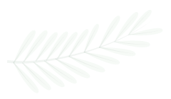
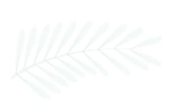
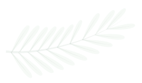
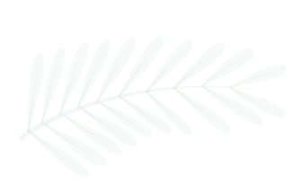

יוגה למתחילים
כאן תוכלו לצפות במספר סרטוני הדרכה למתחילים
תנוחת המשולש
מדריכה: חן סננדג'י
אזור בגוף עליו היא עובדת:
מחזקת את הרגליים, הירכיים, הזרועות והגב, מותחת את החזה והכתפיים ומפעילה את איברי הבטן לשיפר העיכול.
כמה זמן צריך להישאר בה:
מומלץ להישאר בתנוחה 30 שניות לכל צד.
תנוחת המחרשה
מדריכה:שרון אשתון
אזור בגוף עליו היא עובדת:
עובדת על שרירי הגב, הגמשת עמוד השדרה, רגליים אחוריות אזור הבטן ומערכת העיכול. בנוסף לאזורים בגוף התנוחה עובדת גם על אספקת דם למרכזי העצבים, מונעת הצטברות שומנים בבטן ועוזר לכאבי ראש.
כמה זמן צריך להישאר בה:
הישארו בתנוחה במשך כ-1 דק .
תנוחת העץ
מדריכה: חן סננדג'י
אזור בגוף עליו היא עובדת:
תנוחה המחזקת את הירכיים, הרגליים, הזרועות, ושרירי הבטן. משפרת את הריכוז והאיזון.
כמה זמן צריך להישאר בה:
מומלץ להישאר בתנוחה ב-1 דק' בכל צד.
תנוחת חצי לוטוס
מדריכה: חן סננדג'י
אזור בגוף עליו היא עובדת:
התנוחה עובדת על שרירי הטרפז, עמוד שדרה תחתון, עורף ואזור הבטן ומערכת העיכול. בנוסף לאזורים בגוף התנוחה עובדת גם על תנועת הנוזלים בגוף ועל אספקת הדם לרגליים.
כמה זמן צריך להישאר בה:
מומלץ להישאר בתנוחה 30 שניות לכל צד.
תנוחת חצי גשר
מדריכה: שרון אשתון
אזור בגוף עליו היא עובדת:
תנוחה נהדרת לשמירה על כושר הגב. תנוחה זו מותחת את הצוואר, החזה, ועמוד השדרה, ממריצה את איברי הבטן הריאות ובלוטת . בנוסף מסייעת גם בהפחתת חרדה, עייפות התריס, כאבי ראש נדודי שינה, מרגיעה את המוח ועוזרת להקלה ודיכאון קל. מסייעת בטיפול באסטמה על לחץ, לחץ דם גבוה וסינוסיטיס.
כמה זמן צריך להישאר בה:
מומלץ להישאר בתנוחה במשך כ-1 דק'.
תנוחת החתול
מדריכה: חן סננדג'י
אזור בגוף עליו היא עובדת:
חיזוק ומתיחת שריר הגב להקלה, שיפור מערכת הרבייה הנשית, מקלה על בעיות מחזור ושיפור גמישות עמוד השדרה, צוואר וכתפיים.
כמה זמן צריך להישאר בה:
מומלץ להישאר בתנוחה במשך כ- 1 דק'.
תנוחת הסירה
מדריכה: שרון אשתון
אזור בגוף עליו היא עובדת:
מחזקת את הבטן, הירכיים ועמוד השדרה. ממריצה את הכליות, בלוטות התריס, בלוטת הערמונית והמעיים. משפרת את העיכול, בעצירות, חומציות, גזים, חוסר תאבון ומסייעת בטיפול, סוכרת ובעיות במערכת הרבייה הנשית והגברית.
כמה זמן צריך להישאר בה:
מומלץ להישאר בתנוחה במשך כ-20 שניות.
תנוחת הכיסא
מדריכה: חן סננדג'י
אזור בגוף עליו היא עובדת:
התנוחה מחזקת את הקרסוליים, הירכיים, השוקיים והעמוד השדרה, מותחת כתפיים וחזה, ממריצה את אברי הבטן, הסרעפת והלב. מפחיתה פלטפוס (רגליים שטוחות).
כמה זמן צריך להישאר בה:
מומלץ להישאר בתנוחה במשך כ- 1 דק'.
תנוחת הקוברה
מדריכה: שרון אשתון
אזור בגוף עליו היא עובדת:
מחזקת את הגב התחתון, פותחת את בית החזה, מפעילה את הבטן והזרועות, ונותנת מענה לרכינה הטבעית קדימה שרובנו חווים במהלך שגרת היום.
כמה זמן צריך להישאר בה:
מומלץ לבצע 2-3 חזרות של 10-20 שניות בכל חזרה.
תנוחת הלוחם
מדריכה: חן סננדג'י
אזור בגוף עליו היא עובדת:
מחזקת את הרגליים ואת שיווי המשקל, ומייצרת זרימה טובה מכפות הרגליים ועד הראש. שהייה ארוכה בתנוחה יכולה להיות מאתגרת ומחזקת מאוד.
כמה זמן צריך להישאר בה:
מומלץ להישאר בתנוחה בין 30 שניות ל-1 דק'.